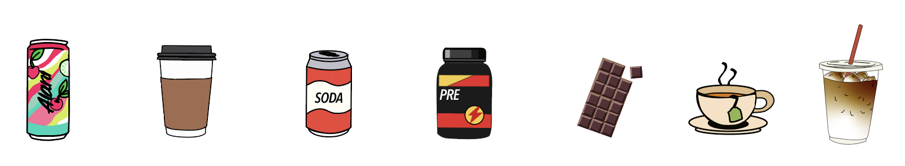

More than 85% of U.S. adults consume caffeine daily, averaging about 180 miligrams per day. From coffee and soda to energy drinks and supplements, caffeine has become part of many people's routines. While moderate intake is considered generally safe, higher amounts can increase the risk of negative health affects like anxiety, sleep disruption, and increased heart rate. Caffeine intake also varies with age, with consumption generally increasing into adulthood. Understanding how much you're consuming and how it compares to recommended limits can help you make more informed choices about your daily routine.

A lot of people think of caffeine as just coffee or energy drinks, but it stacks up throughout the day from smaller sources like tea, soda, chocolate, pre-workout, and even some medications. Caffeine has a half-life of 5 to 6 hours, a 2 p.m. coffee can still be in your system at bedtime, which can quietly affect sleep quality.
Caffeine consumption isn't just about how much you drink, it's also about how consistently you consume it throughout the day. Caffeine is found in so many everyday products, small amounts can quickly add up without much awareness. This makes it easy for regular users to approach higher intake levels over time.
Source: National Library of Medicine.